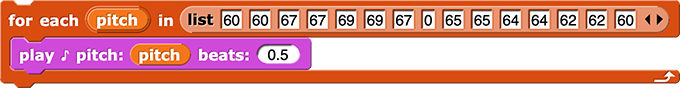

<script type="text/javascript" src="/utilities/gifffer.min.js"></script>
<script type="text/javascript">window.onload = function() {Gifffer();}</script>
<link rel="stylesheet" type="text/css" href="/css/bjc-gifffer.css">
<title>Unit 2 Lab 1: Song Player, Activity 5</title>
</head>
<body>
<h2>Beat Repeat</h2>
<div class="todo">I love this name, but I don't think it goes well with this particular page anymore. Thoughts? "Listing the Notes of a Song"? "Simplifying Your Song"? "Programming a Song More Efficiently" "Playing Each Note in a List"? I like "<strong>Playing Each Note in a List</strong>" best. Thoughts? --MF, 2/12/22 +1 bh<p>To do for next year. --MF, 3/6/22</p></div>
<div class="todo">I made a really nice FOR EACH animation that is buried in a yellow box on page 8. I should make another one for this page. It should probably go just before the second header (after exercise 3). --MF, 2/27/22</div>
<div class="todo">
<ul>
<li><a href="https://docs.google.com/document/d/1ZGj6uApQUyQw3HByk-8tYOU-VPTwduLLbTMhW8LJrXw/edit#" title="Song Player Google Doc" target="_blank">Song Player Google Doc</a></li>
<li><a href="https://localhost/cur/programming/3-lists/optional-projects/4-music-project.html?topic=nyc_bjc%2F3-lists.topic&course=bjc4nyc.html&novideo&noassignment" title="CSP Optional Music Project" target="_blank">CSP Optional Music Project</a></li>
</ul>
</div>
<div class="learn">In this activity, you will make it easier to play a song by putting the notes in a list.</div>
<h3>Using <code>For Each</code> to Traverse a List</h3>
<div class="todo"><p>The paragraph below is well-intentioned, but it doesn't belong here. Maybe after your sample song that uses REPEAT?</p><p>Where do you mean, exactly? --MF, 3/6/22</p>
<div class="todo">
<p>Using the <code>repeat</code> block strategically can make your code shorter and easier to read. It's generally a good idea to write shorter code that is easier to read because when something isn't working right, it's easier to find and fix the problem, or when you want to change it later or have someone else read it, that's easier too.</p>
</div></div>
<p>
<img class="imageRight nopadtb" src="/img/blocks/for-each.png" alt="for each (item) in 'list input slot' {for each to run a command (or group of commands) for each item in a list. For example: 
<div class="endnote">Playing the pitch 0 works like a rest (a pause in the music).</div>
<div class="vocabFullWidth">
<p>A <strong>list</strong> is an ordered sequence of items. You've been using lists throughout this course: to store words for a story, to manipulate the letters of a secret message, and even to store lists such as each individual's responses to the question in a survey.</p>
<div class="endnote">
<a href="#ordered" data-toggle="collapse" title="What does 'ordered' mean?">What does "ordered" mean?</a>
<div id="ordered" class="collapse">
<p>
It doesn't mean that the items have to appear in alphabetical or numeric order. It just means that these are different lists:<br />
<img class="indent" src="/img/1-introduction/list-a-b.png" alt="(list a b)" title="(list a b">
<img class="indent" src="/img/1-introduction/list-b-a.png" alt="(list b a)" title="(list b a)">
</p>
</div>
</div>
</div>
<div class="forYouToDo">
<ol>
<li>
Log in to Snap!, and do one of the following:
<div class="todo">
<p>This might be a risky move. I was hoping to give the kids a chance to start from scratch if they had a cluttered project, but it does mean that from this page on, some students will have only one project for the lab while others will have two. It also means that I can't refer to their project by name on the subsequent pages, so if they name it awkwardly and forget the name, they won't be able to find it. Thoughts? --MF, 2/23/22</p>
<p>The further along I get in writing this lab, the more I regret this choice because I have no way of telling them what project I want them to open other than "your last one". I'm now thinking they should start from a new starter XML here without any option. Thoughts? --MF, 2/27/22</p>
<p>I agree, pick one. I first thought they should start with the example project, but then they don't get the practice in exercise 2. Maybe have them start with the sample (which should be called the <em>starter</em> instead of sample) but still make them make their own FOR EACH block? -bh 3/3/22</p>
<p>How about they start with starter project and you can remind them they can open up song player in another tab to remember the pitches that they used? -pf 3/3/22</p>
<p>To resolve next time around. --MF, 3/6/22</p>
</div>
<ul>
<li>Open the <a class="js-run snap-project" href="/prog/U2/lab01/sample-song-with-for-each.xml" title="Example of For Each - Snap! project" target="_blank"><code>for each</code> example project</a> and save it to your Snap<em>!</em> account.</li>
<li>Open your "Song Player" project if isn't open already.</li>
</ul>
</li>
<li>
Create a simple song using <code>for each</code>. If you opened the example project, edit the pitches in the list to create your song. If you opened your own "Song Player" project...
<ol>
<li>Drag a <code>for each</code> block into the scripting area, and drag a <code>play ♪</code> block inside it.<br />
<img class="indent" src="/img/U2/lab01/for-each-play-note.png" alt="for each (item) in 'list input slot {
play ♪ pitch: () beats: () <li>
Rename the <var>item</var> variable to <var>pitch</var> by clicking it, typing the new name ("pitch"), and clicking "OK."<br />
<div class="comment">
<p>The orange color of item is inaccessible per https://webaim.org/resources/contrastchecker/ It would need to be a significantly darker orange to meet a11y contrast standards. -pf 3/3/22</p>
<p>Thanks. Let's address this at a meeting. --MF, 3/6/22</p>
</div>
<img class="indent" data-gifffer="/img/U2/lab01/for-each-pitch-variable.gif" alt="animation showing the user clicking the 'item' variable in a 'for each block', typing 'pitch', and then pressing 'OK.' The 'for each' variable is then named 'pitch' and not 'item'" title="animation showing the user clicking the 'item' variable in a 'for each block', typing 'pitch', and then pressing 'OK.' The 'for each' variable is then named 'pitch' and not 'item'" />
</li>
<li>
Drag the <var>pitch</var> variable into the "pitch" input (the first input) of the <code>play ♪</code> block. Dragging will make a copy of <var>pitch</var>, so you should see <var>pitch</var> in both places.<br />
<img class="indent" data-gifffer="/img/U2/lab01/for-each-pitch-variable-move.gif" alt="animation showing the user clicking the 'pitch' variable and dragging it into the first input slot of the 'play ♪' block" title="animation showing the user clicking the 'pitch' variable and dragging it into the first input slot of the 'play ♪' block" />
</li>
<li>Type a number for the "beats" input (the second input) of the <code>play ♪</code> block. (For example, if you want half notes, type the number "0.5".)</li>
<li>
Drag a <code>list</code> block into the list input slot of the <code>for each</code> block, add some notes, and click the script to test out your song as you build it.<br />
<img class="indent" data-gifffer="/img/U2/lab01/for-each-list.gif" alt="animation showing the LIST block being dragged into the list input slot of the FOR EACH block. The right triangle button in the LIST block is clicked twice, and each time three additional inputs to the LIST block appear. The numbers 60, 60, 67, 67, 69, 69, 67 are typed into the inputs to the LIST block, and then the FOR EACH block is clicked." title="animation showing the LIST block being dragged into the list input slot of the FOR EACH block. The right triangle button in the LIST block is clicked twice, and each time three additional inputs to the LIST block appear. The numbers 60, 60, 67, 67, 69, 69, 67 are typed into the inputs to the LIST block, and then the FOR EACH block is clicked." />
</li>
<div class="endnote">
Tips for working with the <code>list</code> block:
<ul>
<li>If you hold down the "shift" key when you press the ◂ or ▸ buttons, it will remove or add <em>three</em> spaces at the end of the list instead of just one.</li>
<li>You can press the "tab" key to move the typing cursor to the next input slot without using your mouse.</li>
<li>If you want to add or remove a pitch from your list, you don't have to move the other numbers around. To add a new slot, right-click the slot where you want it to appear, and select "insert a slot." To remove a slot, right-click it, and select "delete slot." </li>
</ul>
</div>
</ol>
</li>
<li>Make sure your script plays your song correctly before moving on.</li>
</ol>
</div>
<div class="todo">Maybe add a page break here in the future? --MF, 2/28/22</div>
<h3>Using <code>For Each</code> to Play <em>Any</em> List of Pitches</h3>
<p>
You can create a <code>play song</code> block that will apply this script to any input song.<br />
<img class="indent" src="/img/U2/lab01/play-song-with-inputs.png" alt="play song (list (60) (60) (67) (67) (69) (69) (67))" title="play song (list (60) (60) (67) (67) (69) (69) (67))" />
</p>
<div class="forYouToDo">
<div class="todo">
<p>How much experience have they had before this of generalizing a script by turning it into a procedure with an input? They should have done that several times by now, no? So that experience should be called out here. "Remember how you generalized your blah blah by making it a procedure with an input? You can do the same thing with this script that plays the notes in a list." --bh 3/3/22</p>
<p>To revisit... --MF, 3/6/22</p>
</div>
<ol start="4">
<li>Create a new command block called <code>play song</code> that takes a list of notes as input and plays each note in the list using <code>for each</code>.
<div class="todo">If we ever remake this animation, the <code>play song</code> block should be pink! --MF, 2/21/22</div>
<div class="endnote">
<p><a href="#hint-new-block" data-toggle="collapse" title="Click for a hint about creating a new command block that takes a list of notes as input and plays each note in the list using FOR EACH.">Click for a hint.</a></p>
<div id="hint-new-block" class="collapse">
<p>
<ol>
<li>Create a new block called <code>play song</code> that takes one input called <var>song</var>, which will be a list of pitches. (To add an input, you have the hover over the tiny space to the right of the block name to get the plus sign (+) to show up and then click it.)</li>
<li>Duplicate your <code>for each pitch, play ♪</code> code by right-clicking the <code>for each</code> block and selecting "duplicate," and then attach the copied code to the <code>play song</code> hat block in the block editor.</li>
<li>Remove the list block containing your previous song, drag the <var>song</var> variable into the <code>for each</code> block where <var>song</var> had been, and click, "OK."</li>
</ol>
</p>
<p><a href="#hint-new-block-animation" data-toggle="collapse" title="Click for a video showing how to create the new command block.">Click for a video.</a></p>
<div id="hint-new-block-animation" class="collapse">
<img class="indent" data-gifffer="/img/U2/lab01/play-song-block-animation.gif" alt="animation showing the steps for creating a new command block that takes a list of notes as input and plays each note in the list: 1) Create a new block called PLAY SONG that takes one input called SONG, which will be a list of pitches; 2) Duplicate your FOR EACH PITCH, PLAY ♪ code by right-clicking the FOR EACH block and selecting 'duplicate,' and then attach the copied code to the PLAY SONG hat block in the block editor; 3) Remove the list block containing your previous song, drag the SONG variable into the FOR EACH block where SONG had been, and click, 'OK.'" title="animation showing the steps for creating a new command block that takes a list of notes as input and plays each note in the list: 1) Create a new block called PLAY SONG that takes one input called SONG, which will be a list of pitches; 2) Duplicate your FOR EACH PITCH, PLAY ♪ code by right-clicking the FOR EACH block and selecting 'duplicate,' and then attach the copied code to the PLAY SONG hat block in the block editor; 3) Remove the list block containing your previous song, drag the SONG variable into the FOR EACH block where SONG had been, and click, 'OK.'" />
</div>
</div>
</div>
</li>Sorry, this is another Snap bug report, but when I ran play-song, the song suddenly sounded horrifying. I even added an explicit set-instrument to 1 but it still sounds really sharp/grating. It did that for the first 3 times I played it. After writing this comment, it seems to be okay. Not sure what triggers it. I still am getting the issue where switching tabs while playing a song prolongs the current note, that seems very repeatable. -pf 3/3/22
This needs to go on GH not in the curriculum. https://github.com/jmoenig/Snap/issues :) –MF, 3/6/22
<li>Try out your <code>play song</code> block with at least two different lists of pitches, and fix any issues with the block.</li>
<li>
Create help text for your <code>play song</code> block by attaching a comment to the hat block. The help text should describe what the block takes as input and what effect the block produces.
<div class="endnote">
You learned about adding comments to your code in the "Adding Program Documentation" section of <a href="/student-pages/U1/L6/01-texting-time.html?topic=sparks%2F1-functions-data.topic&course=middle-school.html" title="Unit 1 Lab 6 Activity 1: Texting Time">Unit 1 Lab 6 Activity 1: Texting Time</a>.<br />
<img class="indent" src="/img/U1/lab06/uppercase-hat-block-comment.png" alt="uppercase block code with a comment attached to the hat block. The comment contains the text 'This block takes a string of text as input and reports the same text but with all of the lowercase letters changed to uppercase.'" title="uppercase block code with a comment attached to the hat block. The comment contains the text 'This block takes a string of text as input and reports the same text but with all of the lowercase letters changed to uppercase.'" />
</div>
</li>
<li><img class="inline" src="/img/icons/save-now.png" alt="Now Is a Good Time to Save" title="Now Is a Good Time to Save" /></li>
</ol>
</div>
<div class="endnote">
<p><a href="#hint-target" data-toggle="collapse" title="Does my play song block have to play every note for the same length of time?">Does my <code>play song</code> block have to play every note for the same length of time?</a></p>
<div id="hint-target" class="collapse"><p>No. On a later page, you can learn a way to store and play songs with both pitch and beat information about each note.</p></div>
</div>
<div class="learn">In this activity, you used <code>for each</code> to play each pitch in a list and created a <code>play song</code> block that will work with any list of pitches.</div>
<div class="todo"><p>This is a more general problem, but it looks particularly bad here: When a <code> text embedded in a line includes spaces, the spaces are way too big compared to all the other spaces on the line. Ideally you'd say <code><code>for</code> <code>each</code></code> but that's too horrible to contemplate, so somehow it should be fixed in the Javascript. --bh 3/3/22</p><p>Go for it! :) --MF, 3/6/22</p></div>